×
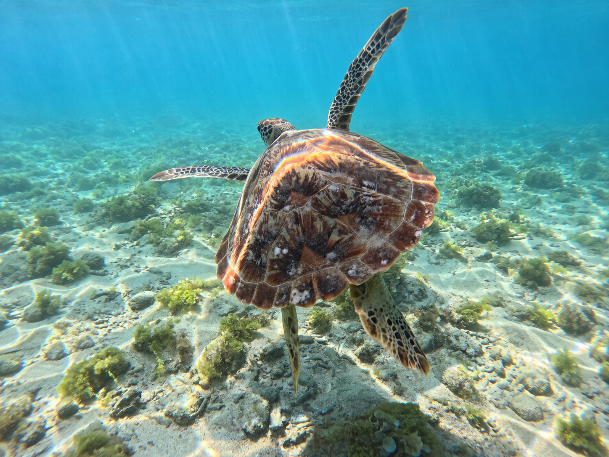
Motorlu araçların olmadığı Gili T’de sabah turkuaz sularda şnorkelle yüzerken kaplumbağalara denk gelebilir, gün batımından sonra adanın hareketli gece hayatına karışabilirsiniz.
Gili Adaları; Gili Trawangan, Gili Meno ve Gili
Air olmak üzere üç adadan oluşuyor. Bunların en
büyüğü ve en hareketlisi Gili Trawangan (Yerel halk ve müdavimleri tarafından Gili T olarak
bahsedilir).
Bir ada düşünün, yalnızca 3 kilometre uzunluğunda ve 2 kilometre genişliğinde. Motorlu tek bir araç
yok. Ve adanın çevresini bisikletle yaklaşık 30 dakikada dolaşabiliyorsunuz. Sabah herhangi bir tura
para ödemeden kendinizi attığınız bir sahilde şnorkelle yüzerken kaplumbağalara denk
gelebiliyorsunuz. Gün batımında gökyüzünün muazzam renklerine tanık olabiliyor, isterseniz sahilde
ata binebiliyorsunuz. Güneş battıktan sonra ise ada bambaşka bir atmosfere geçiş yapıyor. Gili T’ye
sadece gece hayatı için bile eğlence adası denilebilirdi fakat bu haksızlık olur. Çünkü burası
gündüz denizin, gün batımının ve ada hayatının; geceyse eğlencenin tadını çıkarabileceğiniz bir ada.
Ada aşığı biri olarak Gili T’yi favorilerimin arasına koydum. Kısacası, muazzam bir ada deneyimine
hazır olun.
Gili T’ye Bali’den veya Lombok’tan tekneyle ulaşabilirsiniz. Bali’den farklı limanlardan seferler düzenleniyor. Size uygun limanı, Bali’de nerede konakladığınıza bağlı seçebilirsiniz.
Pai’de dolaşmak zaten başlı başına bir keyif ama küçük bir rehber hayatı kolaylaştırıyor. Haritada en sevdiğim yerleri bulabilir, kendi Pai rotanızı oluşturabilirsiniz.
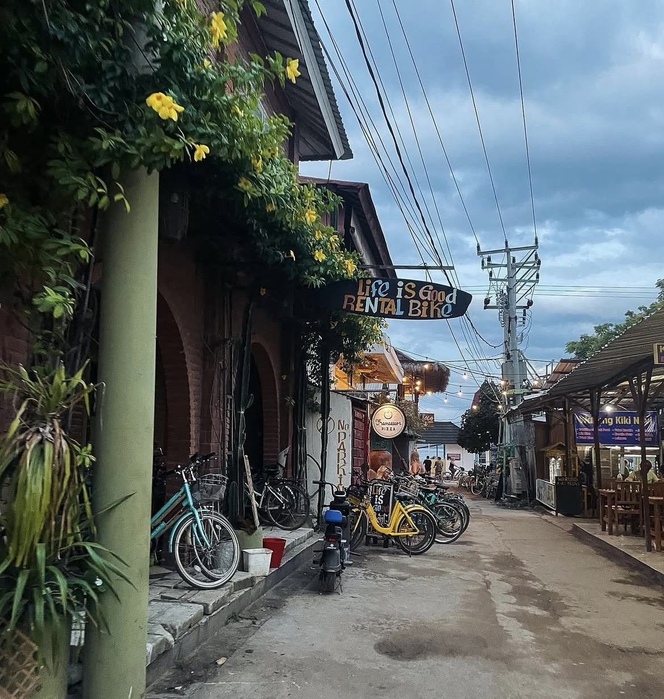
Gili T’de başlangıç aktivitelerden biri bisikletle adanın çevresini dolaşmak. Sakin sakin
yaklaşık bir saatte tam tur atabilirsiniz. Bence bunu ilk gün yapın. Böylece adanın farklı
taraflarını görüp
sonrasında nerelere dönmek istediğinize karar verebilirsiniz.
Bisikleti günlük 75.000 Rp’ye kiralayabiliyorsunuz. Saatlik kiralama seçeneği de var, yaklaşık
20.000 Rp.
Adada motorlu araç olmadığı için bisikletle dolaşmak çok çok rahat. Tek bir anayol var zaten. Bu ana
yolu takip
ederek adanın çevresini gezebilirsiniz. Doğu tarafında yol genellikle asfalt, batı tarafındaysa kum
yer yer yumuşak ve gevşek. Bu kısımlarda bisikletle biraz daha dikkat edebilirsiniz.
Sadece kıyı boyunca da gitmeyin derim. İç taraflara da sapıp adanın başka bir yüzünü görün, yerel
yaşamı
gözlemleyin ve yol üzerindeki restoranlarda mola verin. Ada küçük ama her yerinde keşfedilecek çok
güzel detaylar var.
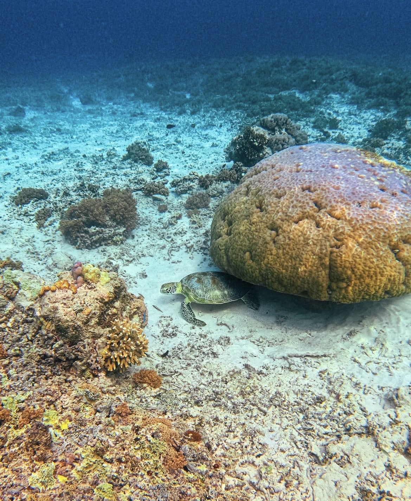
Arkadaşlar, Gili Adaları deniz kaplumbağaları için adeta bir sığınak gibi. Gili T’de onlara o kadar
sık rastlayabiliyorsunuz ki, insan burayı kaplumbağaların ana vatanı sanıyor.
Ve en güzel yanlarından biri kesinlikle şu: Denize girdiğiniz herhangi bir
sahilde bir deniz kaplumbağasına denk gelebilme ihtimaliniz.
Ve daha da güzeli bunun için bir tura para ödemeniz de gerekmiyor. Sabah uyanıp kendinizi denize
atıyorsunuz, şnorkelle yüzerken bir anda karşınıza çıkabiliyorlar. Gerçekten insanı azıcık daha
kulaç atayıma çağıran bir vaziyet bu ve harika hissettiriyor 😊
Kendi şnorkeliniz yoksa sahilde kiralayabileceğiniz yerler var. Fiyatlar yaklaşık 25.000–50.000
Rp arasında değişiyor.
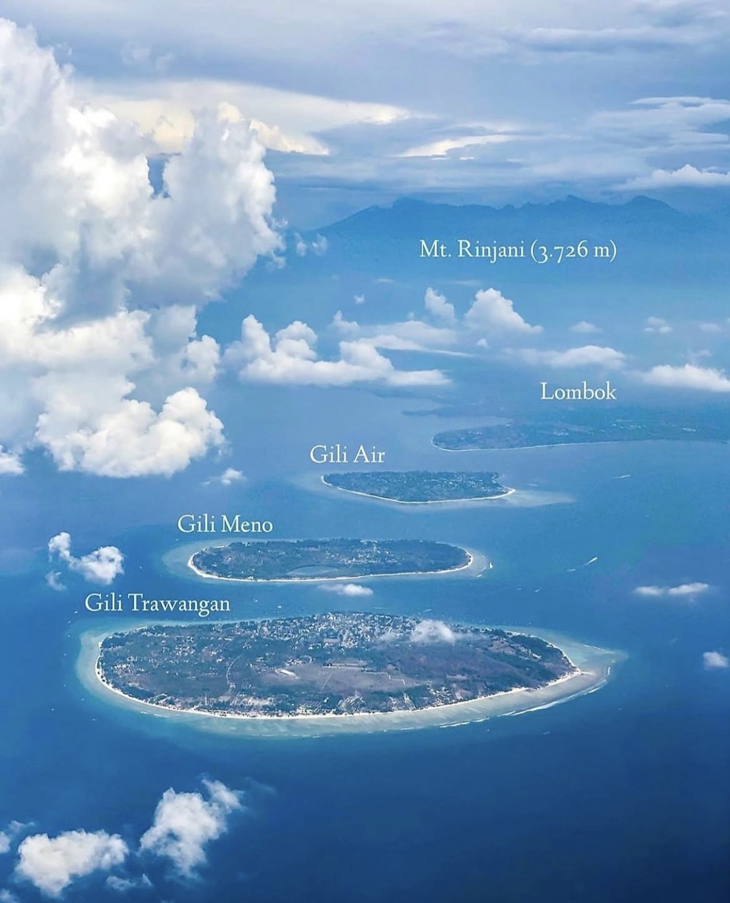
Fotoğrafta gördüğünüz Gili Trawangan, Gili Meno ve Gili Air’in her birinin çevresinde keşfedilecek ayrı bir sualtı dünyası var. Gili T’de kıyıdan şnorkelle yüzmek çok güzel ama bu turla diğer iki adanın çevresindeki noktaları da görebilirsiniz.
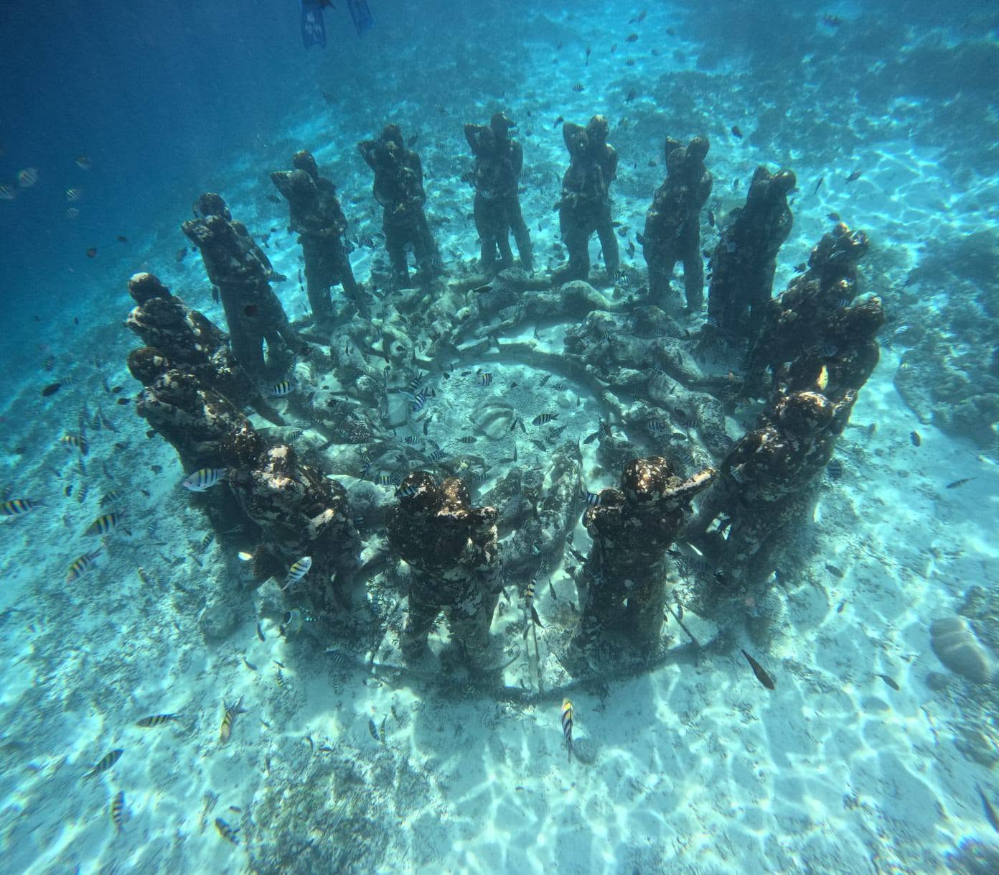
Gili Meno açıklarındaki NEST, turun en akılda kalıcı noktalarından biri. Denizin altında halka şeklinde dizilmiş 48 insan figürünün çevresinde yüzmek gerçekten farklı bir deneyim. Gili Air çevresindeki renkli resiflerde şnorkelle yüzmek ve tur boyunca deniz kaplumbağalarına rastlama ihtimali de cabası.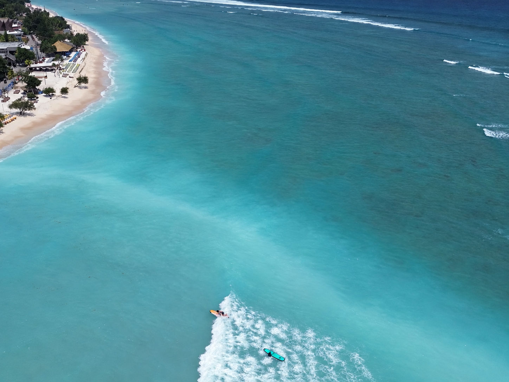
Bir gününüzü dertsiz tasasız geçirin. Beach club’da yemeğiniz, içeceğiniz önünüze gelsin; canınız istediğinde kendinizi masmavi, berrak suya bırakın. Kaplumbağlarla yüzün.
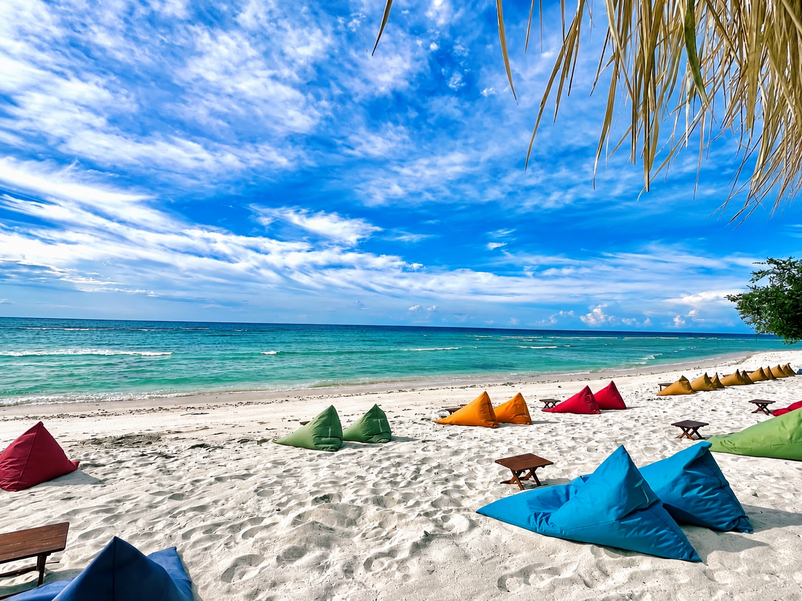
Ben The Exile, Malibu Beach Club ve Le Pirate Beach Club’ı çok beğendim. Güzel fotoğraflar çekilebileceğiniz salıncakları da var. Giriş ücreti ödemiyorsunuz, sadece yiyip içtiklerinizi ödüyorsunuz ve fiyatlar da oldukça makul.
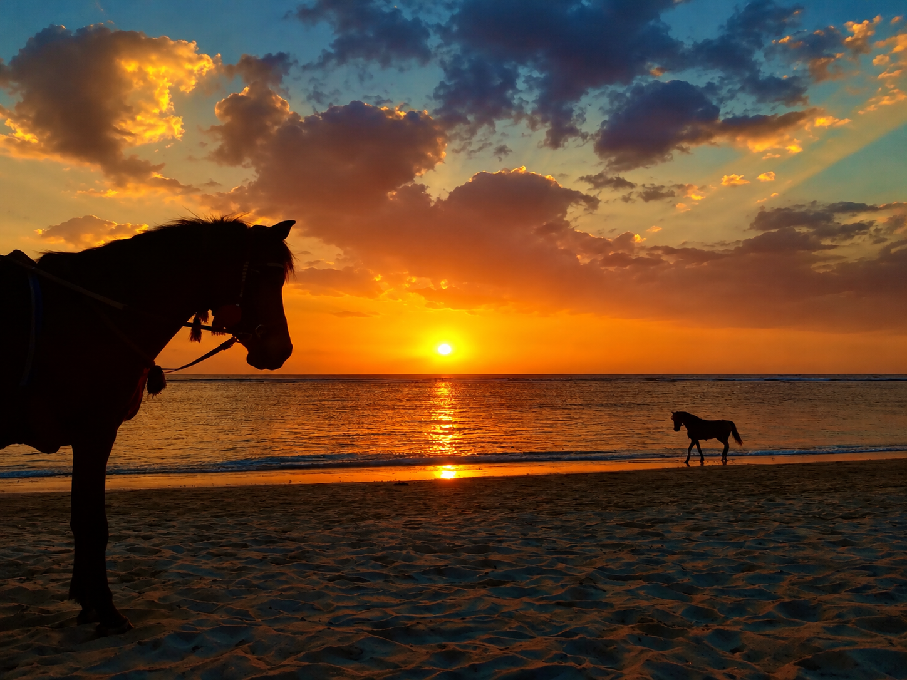
İsterseniz yerel halkın yardımıyla sahilde ata binebilirsiniz. Gün batımına doğru, dalga sesleri eşliğinde kıyı boyunca ilerlemek bambaşka inanılmaz bir his. Güneş denizin üzerine doğru inerken at sırtından manzarayı izlemek, Gili T’den aklınızda kalacak en özel anlardan biri olacağına eminim.
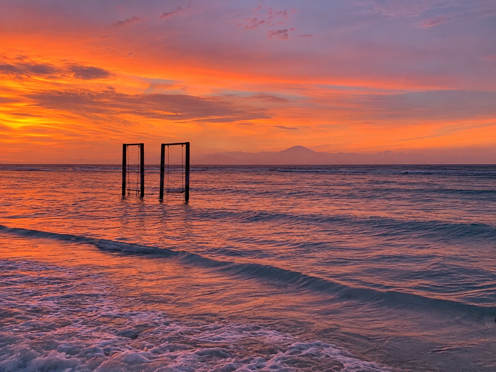
Hayatımda gördüğüm en güzel gün batımlarından biri Gili Trawangan’daydı. Fotoğrafta hiçbir filtre
yok. Adadayken gün batımını kaçırmamanızı o yüzden özellikle öneriyorum.
Güneş batmadan yaklaşık bir saat önce, saat 17:00 civarında batı kıyısına geçerseniz sahilde güzel
bir yer bulabilirsiniz. Bulutlar güneşi kapatmış olsa bile hemen ayrılmayın. Güneşi göremediğiniz
bir akşamda bile gökyüzünün mavi, mor ve pembe tonlara dönüşmesini izleyin. Renkler güneş battıktan
sonraki dakikalarda daha da güzelleşiyor. Hava tamamen kararmadan kalkmayın.
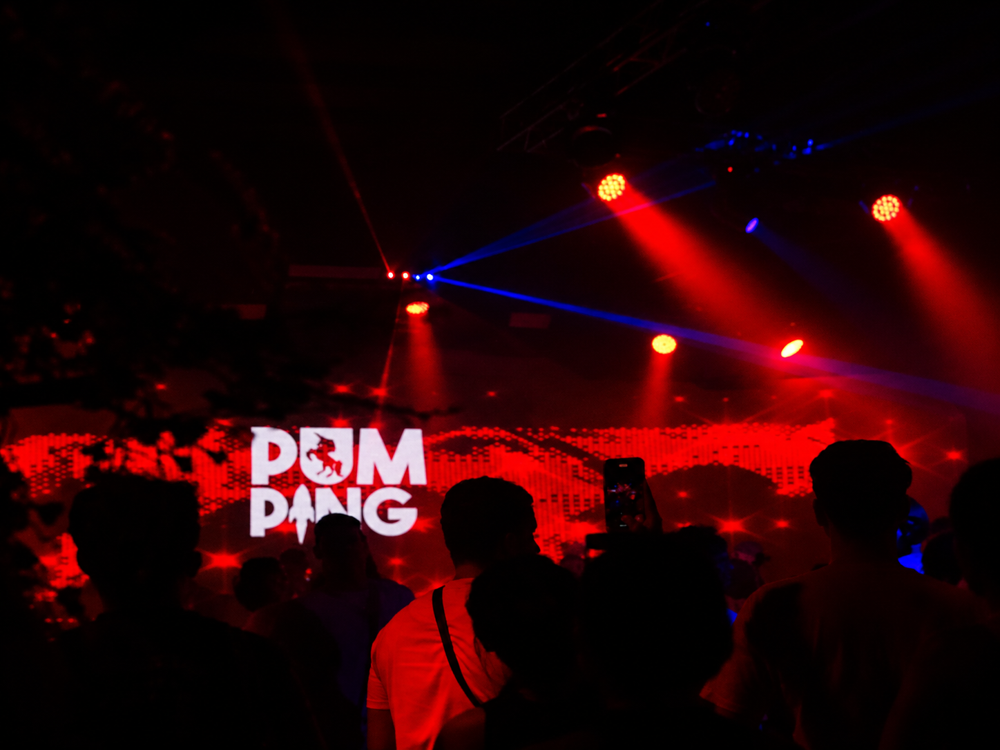
Gündüzleri denizin, kaplumbağaların ve ada keşfinin tadını çıkarıyorsunuz. Güneş battı mı Gili T
sanki bambaşka bir adaya dönüşüyor. Özellikle liman çevresindeki doğu kıyısında müzik yükseliyor,
barlar dolmaya başlıyor. Bir yerde canlı reggae dinleyip ritme kapılıyorsunuz, başka bir yerde DJ
müziğiyle dans ediyorsunuz. Önce gece pazarında taze ızgara deniz ürünleri yiyip sonra bar bar
dolaşmak da akşamın güzel bir planı.
Her gece aynı değil; farklı barlar haftanın farklı günlerinde hareketleniyor. İster sahilde müzik
dinleyip sakin bir akşam geçirin, ister kalabalığa karışıp dans edin, Gili T’de size göre bir gece
mutlaka var. Ada gündüz sunduğu güzelliklerle zaten dopdolu. Akşamlarıysa gerçekten çok canlı.
Gili T’de deniz yaşamını korumak için çalışan yerel girişimler var. Dalış merkezleri resif restorasyonu ve kıyı temizliği gibi çalışmalara katılıyor, tek kullanımlık plastikleri azaltmaya yönelik adımlar atılıyor. Kaplumbağa yuvalarını korumaya yönelik çalışmalar da her geçen gün artıyor.
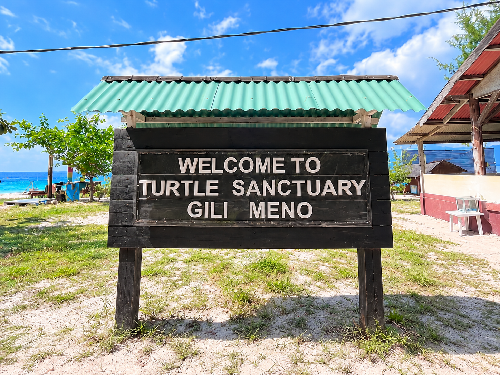
Bu çalışmaları yakından görmek isterseniz, Gili Meno’ya geçip limana yakın Turtle Sanctuary’ye uğrayabilirsiniz. Burada farklı büyüklüklerde yavru deniz kaplumbağalarını görmek mümkün.
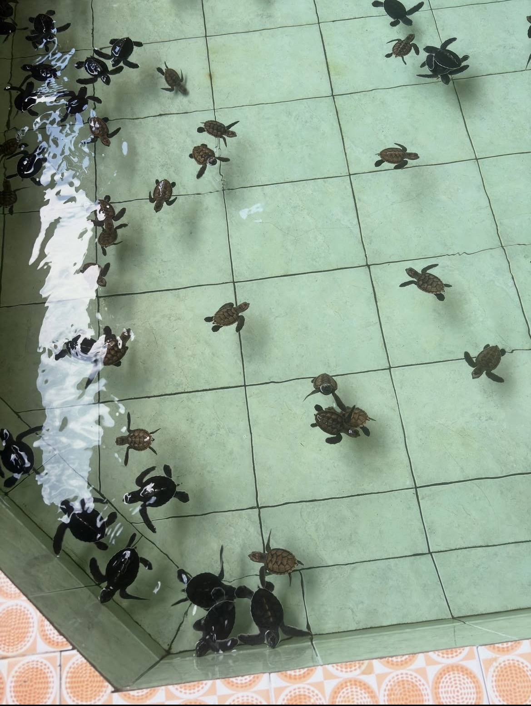
Yumurtadan çıktıktan sonra bir süre havuzlarda büyütülüyor, denize bırakılacak kadar güçlendiklerinde okyanusa kavuşuyorlar.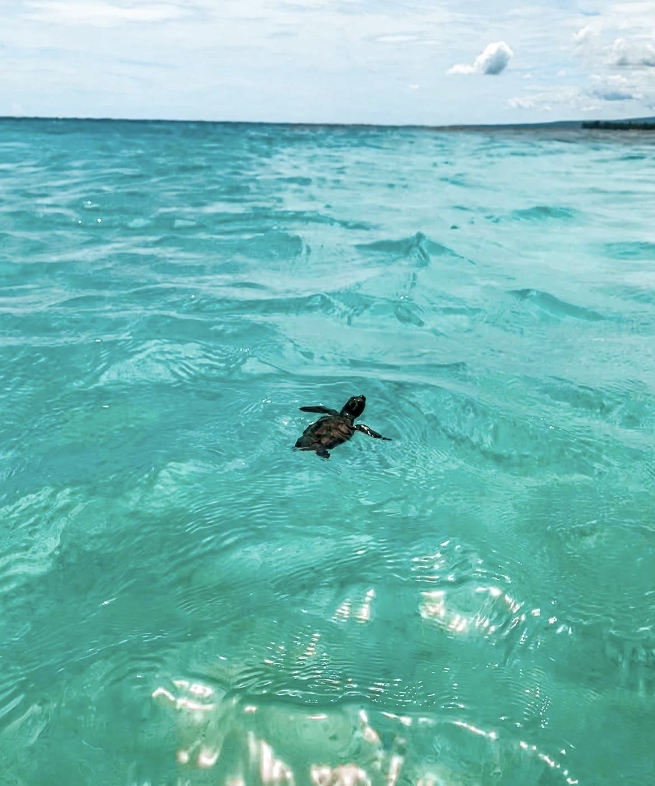
Bırakılma törenleri her gün yapılmıyor ama denk gelirseniz güzel bir ana tanık olabilirsiniz. Yavrulara dokunmamaya özen gösterin. Giriş ücretsiz, bağışlar merkezin çalışmalarına destek oluyor.Gili T’de nerede kalacağınız, adadan nasıl bir tatil beklediğinize bağlı.
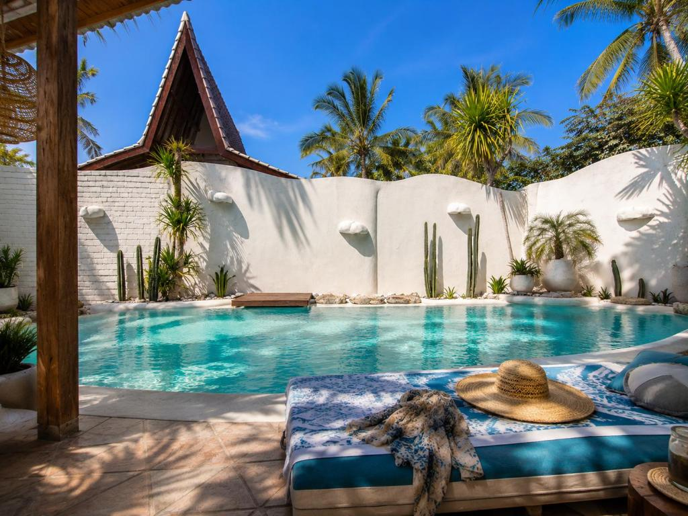
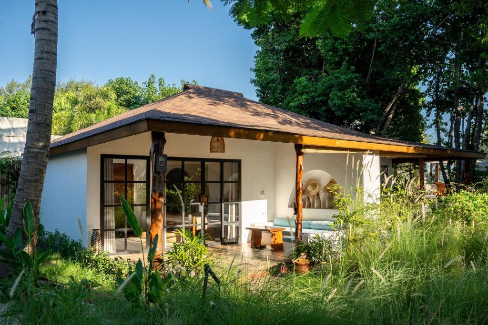
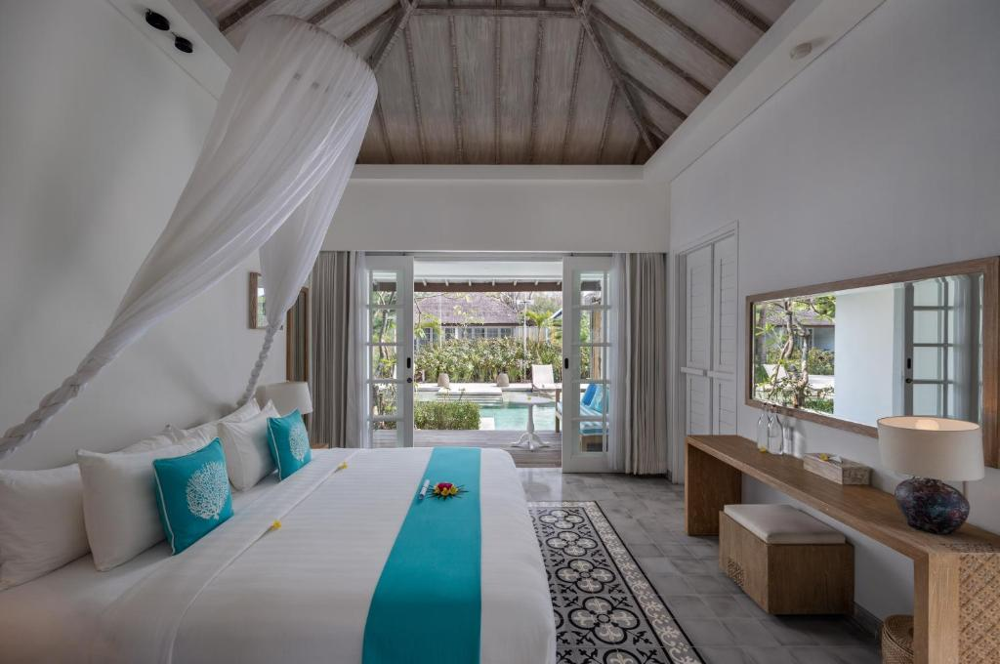
Doğru beklentilerle giderseniz Gili Trawangan ününü hak eden bir ada. Kristal berraklığındaki
sularında şnorkelle yüzerken kaplumbağalara rastlayabilir, motorlu araçların olmadığı yolları
bisikletle keşfedebilir, gün batımında sahilde dinlenip akşamları müzik ve eğlencenin tadını
çıkarabilirsiniz. Gili T, ada hayatının sakin ve hareketli taraflarını bir arada çok iyi dengeliyor.
İster birkaç günlük bir ada kaçamağı için uğrayın, ister Gili Meno ve Gili Air’i keşfetmek için
burada konaklayın. Kendi ritminizde geçireceğiniz günleri ve birbirinden farklı akşamlarıyla Gili T,
kolay kolay unutamayacağınız bir Endonezya deneyimi sunuyor. Ben ada aşığı biri olarak burayı
favorilerimin arasına koydum.
Peki sen Gili T’de ilk olarak ne yapmak isterdin? Hayalini, deneyimlerini, merak ettiklerini veya
aklına takılanları yorumlarda benimle paylaşabilirsin.
E-posta adresiniz yayımlanmayacaktır. Gerekli alanlar * ile işaretlenmiştir.